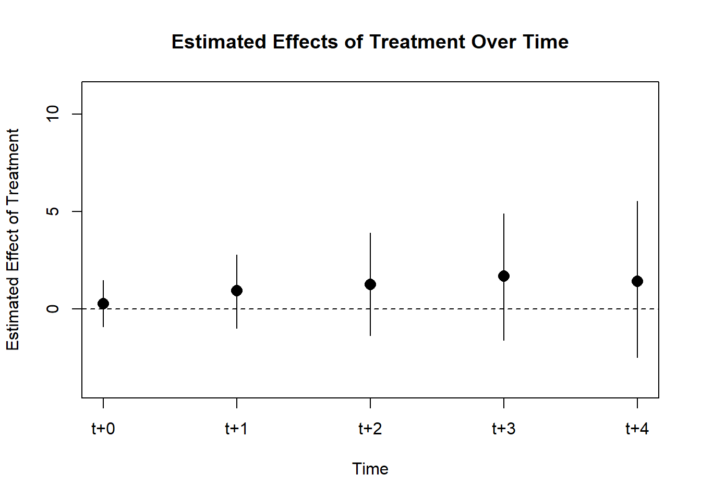

Solutions
Multiple contributions offer various ways to deal with the potential problems. We found Imai, Kim and Wang 2022 and Wooldridge 2021 particularly useful.
1 Imai, Kim and Wang 2022
R-package: PanelMatch().
\(~\)
1.1 The problem it solves
Most matching methods are not fit for Time-Series Cross-Sectional (TSCS) data. The few solutions that exist assume staggered adoption. They create a matched DiD-application for TSCS-data without this assumption.
They address staggered adoption both in the sense that units are treated at unequal T, but also that there is a Average Causal effect of Reversal (ART), so that units jump back and forth in being treated. To our knowledge, this is the only solution that seamlessly integrates both of these effects.
\(~\)
1.2 The way it solves it
Their proposed solution is best understood as a three-stage process. In stage 1 we construct, for each treated unit, a matched set of control units that share identical treatment status over an adjustable time period L. In stage 2 we refine these matched sets of units by balancing over observed, time-varying confounders. In stage 3 we execute the DiD-estimator.
library(tidyverse);library(PanelMatch);library(fixest);library(did2s);library(did)
data(dem) # Example data from "Democracy Does Cause Growth" by Acemoglu, Naidu, Restrepo, and Robinson (2019)\(~\)
1.2.1 Stage 1: Constructing matched sets
In the first stage, units that experience the treatment are matched with units that do not experience the treatment (control). This is practically an exact-match procedure, but relying only on the units’ treatment status over a user-specified length of time. This length of time is called L (short for Lags). If L = 0, units are matched solely on treatment status at time T, but this this would no longer be utilizing the time-dimension in the dataset.
In figure 1.1 they illustrate an example with 5 units over 6 time periods, with L = 3. Values in the triangles and circles indicate whether this is a treated unit or a control unit, while the square box is the pre-treatment period, the length of which is defined by L. In creating matched sets, units with similar pre-treatment periods across the exact same time periods T but with unequal treatment status in the triangles/circles are matched together to compose a set. In the left-hand panel (a), we are looking for units we can use to find the ATT. The three red units and the three blue units compose separate matched sets with one treated unit and two control units. The grey units compose a third matched set with one treated unit and one control unit.
The right-hand panel (b) is similar, but now we are looking for sets with which we can analyse the ART. The blue circle in this panel simply illustrates a case of reversal but which do not have any suitable match in the data.
Any data point that does not enter into a matched set is discarded.
\(~\)

Figure 1.1: An Example of Matched Sets with Five Units and Six Time Periods and with L = 3
\(~\)
The following R-code gives an overview of the PanelMatch()-arguments that refer to stage 1:
mod <- PanelMatch(
#General information for the PanelMatch-function:
data = dem, #Data to be used
time.id = "year", #Name of time-column
unit.id = "wbcode2", #Name of unit-column
treatment = "dem", #Name of treatment variable
outcome.var = "y", #Name of outcome variable (they have named the column Y...lol...)
qoi = "att", #Quantity of interest.
verbose = TRUE, #Prints more information about all calculations
# Arguments for Stage 1:
matching = TRUE, #Should Stage 1 exact match on treatment history?
lag = 4, # This argument controls the number of lags, notated as "L" int he article
match.missing = FALSE, # Should patterns of missingness be included in matching the units into sets?
listwise.delete = TRUE, #Delete missingness listwise
exact.match.variables = NULL, #In principle, the exact matching in stage 1 can include all categorical variables, not just the treatment history. Character vector of relevant categorical variables can be added here. NULL means that we will only match on treatment history.
...
)\(~\)
1.2.2 Stage 2: Refine match sets
In stage 2 the goal is to establish balance on time-varying covariates within these matched sets over the pre-treatment period (L). This is to address the parallel trends assumption. This can be done with many existing approaches, and the article suggests either using a matching procedure such as Mahalanobis distance or Propensity matching, or create unit weights.
In the evaluations in the article, weighting performs better, and at times a lot better, than distance matching.
1.2.2.1 Distance-balancing
Using Mahalanobis-distance: Computes standardized Mahalanobis-distance between the treated unit and each of its matched control units, averaged over the pre-treatment period.
Propensity score matching: Estimates the conditional probability that a unit will experience the treatment given pre-treatmeant covariates (the propensity score). This approach requires additional specification for how to estimate the probability of being treated, such as a logistic regression.
Once a distance measure has been selected and computed, the sample is reduced to the J most similar units within each matched set.
1.2.2.2 Weight-balancing
Each control unit within each matched set is assigned a weight, with greater weight assigned to more similar units. This approach requires the user to select some method to determine similarity. The authors suggest propensity score weighting or calibration weights.
\(~\)
The following R-code gives an overview of the PanelMatch()-arguments that refer to stage 2:
mod <- PanelMatch(
#General information for the PanelMatch-function:
data = dem, #Data to be used
time.id = "year", #Name of time-column
unit.id = "wbcode2", #Name of unit-column
treatment = "dem", #Name of treatment variable
outcome.var = "y", #Name of outcome variable (they have named the column Y...lol...)
qoi = "att", #Quantity of interest.
verbose = TRUE, #Prints more information about all calculations
# Arguments for Stage 1:
...
# Arguments referring to Stage 2:
lead = 0:4, #How far (years) into the future should the outcome be measured? Notated as F in the article
forbid.treatment.reversal = FALSE, #Should reversal be allowed in the period between the treatment occurs (T) and the outcome is measured (T + leads/F)
refinement.method = "CBPS.weight", #Covariate balancing propensity score weights from Imai and Ratkovic (2014)
size.match = 5, #Indicates the J closest matches to keep in the refinement. This is only relevant for the distance-methods, not weight-methods.
covs.formula = as.formula(~ I(lag(tradewb, 1:4)) + I(lag(y, 1:4)) #Formula for refinement
)\(~\)
1.2.3 Stage 3: The DiD-estimator
Before executing the DiD-estimator, the user needs to specify how long into the future the effect should occur, called F. If F = 2 and treatment occurs in T = 0, then the outcome Y from T+2 is used. This is similar to lagging the treatment variable in a normal regression setup, but with a lead-logic instead. Once F is specified, we can proceed with the DiD-estimator.
The DiD-estimator sequence: 1. Calculates the counterfactual outcome for each treated unit using the weighted average of the refined matched control units. 2. Computes DiD estimate of the ATT for each treated unit. 3. Averages the ATT estimates across all treated units.
\(~\)
The following R-code first runs stage 1 and 2 with the PanelMatch()-function, then executes stage 3 using the PanelEstimate-function. It also produces a simply visualization of the result:
\(~\)
mod <- PanelMatch(
#General information for the PanelMatch-function:
data = dem, #Data to be used
time.id = "year", #Name of time-column
unit.id = "wbcode2", #Name of unit-column
treatment = "dem", #Name of treatment variable
outcome.var = "y", #Name of outcome variable (they have named the column Y...lol...)
qoi = "att", #Quantity of interest.
verbose = TRUE, #Prints more information about all calculations
# Arguments for Stage 1:
matching = TRUE, #Should Stage 1 exact match on treatment history?
lag = 4, # This argument controls the number of lags, notated as "L" int he article
match.missing = FALSE, # Should patterns of missingness be included in matching the units into sets?
listwise.delete = TRUE, #Delete missingness listwise
exact.match.variables = NULL, #In principle, the exact matching in stage 1 can include all categorical variables, not just the treatment history. Character vector of relevant categorical variables can be added here. NULL means that we will only match on treatment history.
# Arguments referring to Stage 2:
lead = 0:4, #How far (years) into the future should the outcome be measured? Notated as F in the article
forbid.treatment.reversal = FALSE, #Should reversal be allowed in the period between the treatment occurs (T) and the outcome is measured (T + leads/F)
refinement.method = "CBPS.weight", #Covariate balancing propensity score weights from Imai and Ratkovic (2014)
size.match = 5, #Indicates the J closest matches to keep in the refinement. This is only relevant for the distance-methods, not weight-methods.
covs.formula = as.formula(~ I(lag(tradewb, 1:4)) + I(lag(y, 1:4)) ) #Formula for refinement
)
#Stage 3
res <- PanelEstimate(sets = mod, data = dem)
#Simple visualization of the result
plot(res) \(~\)
1.2.4 Extensions
Step 1 of the PanelMatch()-approach is intuitive and rather straight-forward. While it is currently not implemented in the R-package, one the initial matching and balancing has been done, we could estimate the ATT with Poisson, logit, or other distributions.
1.3 Unsolved problems
- Requires binary treatment
\(~\)
1.4 List of assumptions
Parallel trends
Assumed causal order: Confounders Z are realized before treatment X is realized before outcome Y
Assumes absence of between-unit spillover effects (they are looking into applications without this assumption)
–
2 Wooldridge 2021
Wooldridge’s Dropbox folder (Contains Stata-code)
2.1 The problem it solves
Wooldridge shows in this article that the issue with staggered intervention and heterogeneous treatment effects can be solved by altering the parameterization of the linear regression model. He also shows that you can get similar results both using TWFE or a pooled model where group level averages are included into the model (the Two-Way Mundlak model). The benefit with the latter approach is that it is easily adapted to non-linear models such as exponential, logit, and probit models. This idea is further elaborated in another article: “Simple Approaches to Nonlinear Difference-in-Differences with Panel Data”. Wooldridge has also recorded a “lecture on this topic” (link to his shared Dropbox folder). The introduction to “Potential Outcomes, Treatment Effects, and Estimation Methods” also comes highly recommended.
2.2 The way it solves it
\(d_i\): Are you eventually treated?
\(p_t\): Are we in a post-treatment period?
\[w_i = d_i \cdot p_t\]
\[y_{it} = \alpha + \beta w_i + d_i + p_t + u_{it}\]
You are not doing anything fancy. [[https://www.dropbox.com/sh/zj91darudf2fica/AADj_jaf5ZuS1muobgsnxS6Za?dl=0&preview=did_seminar_20210923.mp4| Wooldridge in DiD seminar 23.09.21]]
Wooldridge shows that the TWFE estimator is equivalent to the “pooled” regression which is exactly the difference-in-differences estimator (difference before and after treatment for the treated group versus before after for the control group).
So what happens when we have heterogeneous effects in a staggered treatment setting?
It is not a problem with our estimator. It is a problem with our imagination. (Wooldridge)
Wooldridge notes that \(w_i \cdot fr_t = d_i \cdot fr_t\) : Interacting the treatment indicator with the time-dummies is the same as interacting the time-constant \(d_i\) with the time-dummies \(fr_t\). The model he comes up with for correct parameterization of the case with staggered treatments and heterogeneous treatment effects is the following:
\[Y_{it} = \alpha + \beta_q (w_{it} \cdot fq_t) + ... + \beta_T (w_{it} \cdot fT_t) + \xi d_i + \theta_q fq_t + ... + \theta_T fT_t + u_{it},\]
\[t = 1, ..., T; i = 1,2,...,N\]
\(fq_t ... fT_t\) denote the fact that we are in a staggered treatment setting and that different cohorts have different pre- and post-treatment periods. \(q\) is the first period someone enters treatment. We could add dummies for time \(t < q\), but these are redundant.
In the above equation, we allow treatment effects \(\beta_{q ... T}\) to change over treatment period. Below, we show how we can simply specify this model in R (including several redundant parameters).
set.seed(100)
df <- did2s::gen_data(
g1 = 2011, # treatment date for group 1
g2 = 2012, # treatment date for group 2
g3 = 0, # treatment date for group 3
panel = c(2010, 2012), # start and end years for panel
te1 = 3, # treatment effect for group 1
te2 = 1, # treatment effect for group 2
te3 = 0, # treatment effect for group 3
te_m1 = 0, # treatment effect slope per year for group 1
te_m2 = 0, # treatment effect slope per year for group 2
te_m3 = 0, # treatment effect slope per year for group 3
n = 1500 # number of individual in sample
)
df_hom <- did2s::gen_data(panel = c(2010, 2012),
g1 = 2011, g2 = 2012, g3 = 0,
te1 = 2, te2 = 2, te3 = 0,
te_m1 = 0, te_m2 = 0, te_m3 = 0)
# df is a simulated dataset with heterogeneous and staggered treatment effects (the group treatd in 2011 has effect = 3, while the group treated one year later has effect = 1). A first-mover advantage is common in many real applications.
# df_hom is a simulated dataset with homogeneous and staggered treatment effects. Here, the expected (average) effect in both treatment cohorts are the same.
# Two-Way Fixed-Effects with homogeneous treatment effects
feols(dep_var ~ treat | unit + year, data = df_hom, cluster = "state") |> summary()
# Two-Way Mundlak with homogeneous treatment effects
df_hom <- df_hom |>
group_by(unit) |> mutate(mtreat_u = mean(treat)) |>
group_by(year) |> mutate(mtreat_t = mean(treat))
lm(dep_var ~ treat + mtreat_u + mtreat_t, data = df_hom) |> summary()
# This follows an equivalent logic, note that year dummies t < q are redundant
feols(dep_var ~ treat | year + g, data = df_hom) |> summary()
# So far, everything is good (although almost by coincidence, as we were lucky that the effect for the two cohorts were exactly the same!)
# The naive Two-Way Mundlak and TWFE is wrongly parameterized when we have heterogeneous TEs.
# This produces an average effect, but not 3 for group 1 and 1 for group 2.
df <- df |>
group_by(unit) |> mutate(mtreat_u = mean(treat)) |>
group_by(year) |> mutate(mtreat_t = mean(treat))
lm(dep_var ~ treat + mtreat_u + mtreat_t, data = df) |> summary()
# Similarly wrong
feols(dep_var ~ treat | year + g, data = df) |> summary()
# Instead, we can add interactions between treatment cohort (g) and time-since treatment (rel_year)
# Note that more than one level for rel_year t < q is redundant, and we could have collapsed these.
# This we could have done for year t < q too if we wanted.
# Note that we need to provide correct base-line comparisons to get correctly formed estimates.
levels(factor(df$rel_year))
feols(dep_var ~ factor(g):factor(rel_year) | year , data = df) |> summary()
# Adding the treatment indicator is also redundant
feols(dep_var ~ treat : factor(g) : factor(rel_year) | year , data = df) |> summary()
# Estimates for groups, calendar time, or "event study" (grouped by rel_year) can be aggregated from here
# An easier approach is to use specialized functions such as those in the did-package
did::att_gt(yname = "dep_var", gname = "g", idname = "unit", tname = "year",
control_group = "notyettreated", data = df) |>
did::aggte(type = "group")
# control_group could be restricted to "nevertreated"
# type can also be "dynamic" (event study), "calendar", or "simple" (ATT)
# Compare the "simple" approach with the wrongly parameterized model to see the problem of using the naive TWFE/TWM to estimate the ATTOne nice thing about the TWM is that it allows time-constant covariates \(X_i\). These are particularly useful if we include them as interactions with time dummies and treatment. \(X_i\) would then become a mediator. Doing this would be a way to explore treatment heterogeneity across observed covariates. It should be mentioned here that the differences in estimated effects (e.g., across cohorts or across \(X_i\)) are not causal estimates themselves. We would then need to consider the selection mechanism into cohorts or into different \(X_i\).
We have also not discussed the assumptions needed to interpret the estimate of the treatment as causal here, such as SUTVA, the parallel trends assumption, and the no anticipation assumption. In most observable settings, some or all of these assumptions are violated (to some degree). It is therefore always advisable to test the model in several ways, e.g., through a discussion of how the model relates to other things we belive is true, through testing the predictive capacity of the model, through building alternative explanations, etc. Furthermore, even if the causal estimate is correct, there are no guarantees that causal effects in the social context would stay the same over time or for other cases. Exploring treatment heterogeneity is also a way to build some intuition for how effects might change in new settings.
2.3 An example implementation of TWM for real TSCS data in R
For applied researchers like ourselves, implementing Wooldridge’s TWM was not straight forward. Here, we give a step-by-step guide for how to setup the data and estimate the ATT, using the dataset from Acemoglu, Naidu, Restrepo and Robindson (2019). This is the same dataset used as an example for PanelMatch() above.
In doing this, we want the code to be able to accommodate all kinds of complexities: staggered adoption, treatment reversal, heterogeneous treatment effects, and the presence of never-treated and always-treated units.
library(PanelMatch)
data(dem)The dataset comes as a common country-year long-format table. The variables of interest for us is the unit ID (wbcode2), year (year), and whether or not country i is a democracy (dem) at time t. We need some more stuff:
- A time-until/since-treatment-occurred variable, with separate categories from always- and never-treated
- Cohort dummies that identifies:
- units that are treated in the same year
- units that were already treated when time-series started
- units that are never treated
- Deal with reversal, by one of two ways:
- Delete all years for a unit from the year it reverses, or
- Separate units into multiple spells, with a new spell created for a unit each time it reverses to non-treated status
- NOTE: Separating units into multiple spells at reversal is not something Wooldridge suggests, but we do not see any reason why it shouldn’t work. We can cluster the standard errors by country (and not country-spell) to deal with non-independent error terms.
To get the list of items above, we first need to identify whether and in what year a unit is treated. We can do this by simply comparing democracy status in t with t-1. But in doing this, we need to fix another complication: We can’t have missing data, as this will ruin later code. When lagging, we will have missing data in the first year. If you are willing to assume that treatment-status did not change in the first year, you can simply assign the same status code to democracy in t-1 is it has in t.
##### Goal 1: Identify when a unit is treated
#Lag dem by 1 to identify when change occurs
dem <- dem[order(dem$wbcode2, dem$year),] #Order before lag
dem <- dem %>% group_by(wbcode2) %>% mutate(dem_lag1 = lag(dem))
#We can't have missing data, as this will ruin later code. But if you are willing to assume that treatment-status did not change in the first year, you can run this code
dem$dem_lag1 <- ifelse(is.na(dem$dem_lag1)==TRUE, dem$dem,
dem$dem_lag1) #Assume that treatment status was equal to first yearWe still need to remove rows with missing information on our treatment (dem). A word of caution: Make sure that this does not delete time-series in the middle of a country’s history, only at start or end. You must avoid this:
error_example <- data.frame("ID" = 1,
"year" = 1970:1973,
"dem_lag1" = c(1, NA, NA, 1))
knitr::kable(error_example)You can diagnose whether this is a problem. If this code returns any FALSE, you need to inspect:
table(dem %>% subset(is.na(dem_lag1)==FALSE) %>%
group_by(wbcode2) %>%
mutate(duration_since_last_year = 1==(year - lag(year, 1)) ) %>% ungroup() %>%
select(duration_since_last_year))Once this is corrected, you can delete rows:
### If diagnose is ok, you can delete rows
dem <- dem[which(is.na(dem$dem_lag1)==FALSE),]Now you can identify change in treatment-status. Here we create the variable change_in_dem, which can have the values -1 (reversal), 0 (status quo), and 1 (treated).
### Identify change in treatment status
dem$change_in_dem <- dem$dem - dem$dem_lag1 #change_in_dem can now take the values -1 (reversal), 0 (status quo), and 1 (treated)Now we wncounter point 4 above: How should we deal with reversal? We start by identifying the occurrences of reversal, and assign unit-spell IDs, so that each unit has a new ID for each time it reverses:
##### Deal with reversal
### If you want to include the same country multiple times, it must be considered a new unit each time it reverses back to none-treated status:
dem$reversal <- ifelse(dem$change_in_dem < 0, 1, 0)
dem <- dem %>% group_by(wbcode2) %>% mutate(spell = cumsum(reversal)) #Count number of reversals
dem$unit_spell_id <- paste0(dem$wbcode2, "_", dem$spell) #By combining unit-id with number of reversals, we now have a unit-spell-ID.If you want to go with solution 1 to the reversal problem, to simply delete all country-years once a country reverses, run the following code. If you want to keep countries as separate units after each reversal, do not run the following code.
#If you want to delete everything after reversal, do this:
dem <- dem[which(dem$spell<1),]Right, 1/3 points dealt with. We now continue on to identify when treatment occurs for a unit, and then assign all units to a cohort dependeing on when treatment occurred:
##### Identify points in time where treatment occurs
dem$treated_this_year <- ifelse(dem$change_in_dem < 0, 0, dem$change_in_dem) #Converts -1 to 0
##### Identify cohort
dem <- dem[order(dem$unit_spell_id, dem$year), ]
tmp_cohortdat <- dem[which(dem$treated_this_year==1), c("unit_spell_id", "year")]
tmp_cohortdat <- tmp_cohortdat %>% rename(cohort = year) #Units will now be given cohort ID equal to the year they were treated
dem <- full_join(dem, tmp_cohortdat)
rm(tmp_cohortdat)The keen eye will notice that the above code does not assign any cohort to never-treated and always-treated units, because treated_this_year is always 0 for these units. This is because we want to create a time-until/since-treatment-occurred (point 2 above) before we do this. This is easier to do when we can treat cohort as a numeric variable, which we can’t once we assign cohorts to never-treated and always-treated (they do not have any meaningful treatment-year).
Here, we create time_to_traetment, which is our time-until/since-treatment-occurred-variable.
### Create relative-time-to-treatment: (we need to adjust this later but easier to create while we can keep "cohort" numeric)
dem$time_to_treatment <- dem$year-dem$cohort #This is easier to create while we can have cohort numeric (which we can't once we give a cohort to never- and always-treated)We can now assign cohort to always- and never- treated units:
### Give cohort to always- and never-treated
dem <- dem %>% mutate(cohort = ifelse(is.na(cohort)==TRUE & dem==1, "always_treated",
ifelse(is.na(cohort)==TRUE & dem==0, "never_treated", as.character(cohort) ) ) )And we also need to give values to always- and never-treated units on the time_to_treatment-variable.
### Give relative-time also to never- and always- treated
dem$time_to_treatment <- ifelse(dem$cohort == "never_treated", "Infinity",
ifelse(dem$cohort == "always_treated", "-Infinity", as.character(dem$time_to_treatment)
))This is some obsolete code that we don’t think is needed, but it creates Wooldridge’s w:
### Indicate if unit will ever be (or always was) treated
dem$eventually_treated <- ifelse(dem$cohort=="never_treated", 0, 1) #This code is probably obsolete but not really sure. Useful to produce Wooldridge's w-variable.
##### Create the Wooldridge's w
dem$w <- dem$eventually_treated * dem$dem #w_i_t = d_i * p_t = (will unit be treated) * (are you in post-treatment-period)And we have solved all points on our list. We can now get all sorts of estimates with simple regression. The power of the Mundlak-approach is that it flexible for different distributions, e.g. gaussian, poisson, logit etc.
Here, we estimate the cohor-specific ATT, and show that it is quite dramatically heterogeneous:
##### Estimate ATT
mod <- feols(y ~ factor(cohort) : factor(time_to_treatment) | year , data = dem, cluster = ~wbcode2)
##### Graph
mod <- tidy(mod, conf.int = TRUE)
### Clean term to get the useful information
mod$cohort <- gsub(".*cohort.(.*):factor.*", "\\1", mod$term)
mod$time_to_treatment <- as.numeric(gsub(".*time_to_treatment.(.*)$", "\\1", mod$term))
### Remove always-treated from plot
mod <- mod %>% subset(time_to_treatment>-Inf)
### Plot
ggplot(mod, aes(y = estimate, ymin = conf.low, ymax = conf.high, x = time_to_treatment, fill=cohort)) +
geom_line() +
geom_ribbon(alpha = 0.5) +
geom_vline(xintercept = 0) +
theme_minimal()Lots of heterogeneity, but is there a signal in there somewhere? We can get the mean for each point in time_to_treatment, which shows the clear effect of democracy on GDP:
mean_mod <- mod %>% group_by(time_to_treatment) %>% mutate(mean_est = mean(estimate),
mean_max = mean(conf.high),
mean_low = mean(conf.low))
ggplot(mean_mod, aes(x = time_to_treatment, y = mean_est, ymax = mean_max, ymin = mean_low)) +
geom_ribbon(alpha = 0.7) +
geom_line() +
geom_vline(xintercept = 0) +
theme_minimal()
2.3.1 Extensions
There are various non-parametric alteration we could make to the data. For example, we could restrict it to only include a certain number of years before and after treatment occurs. We could add a quarantine period for observations after treatment reverses, if we want units to be able to re-enter the dataset after reversal, but not right away.
3 Callaway and Sant’Anna 2021
3.1 The problem it solves
Callaway and Sant’Anna provide a way to estimate the ATT under staggered treatment and heterogeneous treatment effects. The did R-package includes a simple to use approach to correctly estimate the group-time average treatment effects. Also see the did webpage for more information.
3.2 The way it solves it
By avoiding bad control groups (e.g., comparing treated units with already treated units, or if one thinks that the never-treated group is different from the group that eventually becomes treated, one can also only use the not yet treated group as control). Provides ways to aggregate the treatment effects into group-time treatment effects, the average group-level treatment effect, or the average effect of participating in treatment for groups that have been exposed to treatment exactly \(n\) time periods. The default approach is a parametric doubly robust approach (using both inverse probability weighting and regression estimators). See “Potential Outcomes, Treatment Effects, and Estimation Methods” for an explanation of what “doubly robust” means (at the end of the lecture).
This code implements the method:
source("Data/generate_panel_data.R") #Generate random data
out <- att_gt(yname = "y",
gname = "first_treat",
idname = "id",
tname = "time",
xformla = ~1,
data = dat,
est_method = "reg",
control_group = "notyettreated" #Will include units that will receive treatment later as control group
)
#Plot
ggdid(out, ylim = c(-.25,.1)) #Event-type plot
es <- aggte(out, type = "dynamic")
ggdid(es)Event-study plot:
#Event-type plot
es <- aggte(out, type = "dynamic")
ggdid(es)